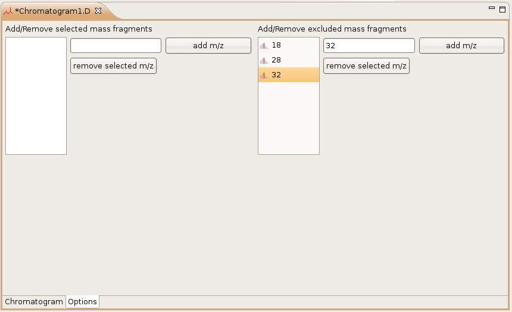

Ion Remover
The ion remover filter removes certain ions from the chromatogram selection.
Remove the selected ions given by the preferences:

The user can add/remove further ions using the new or remove button.
If the checkbox "Use the ions stored in the settings" is unchecked, the chosen excluded ions from the chromatogram editor will be taken.
Remove the selected ions given by the chromatogram editor:
